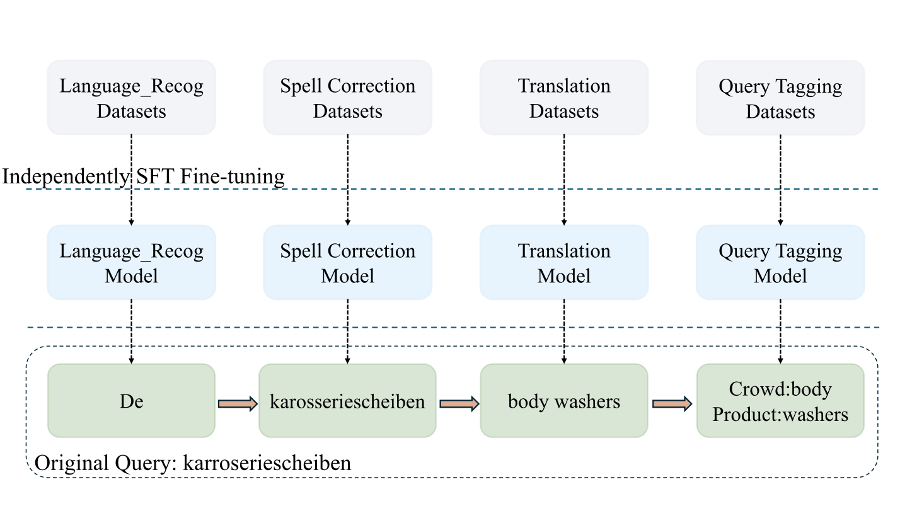
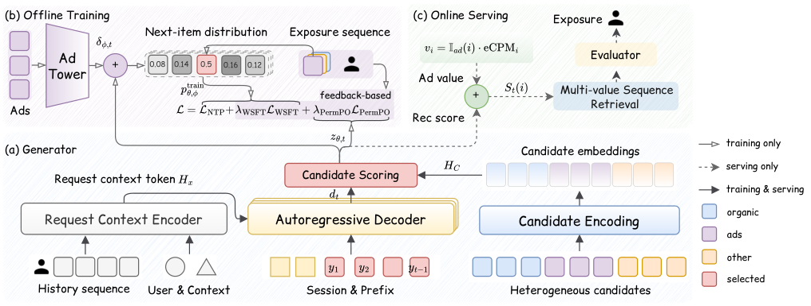
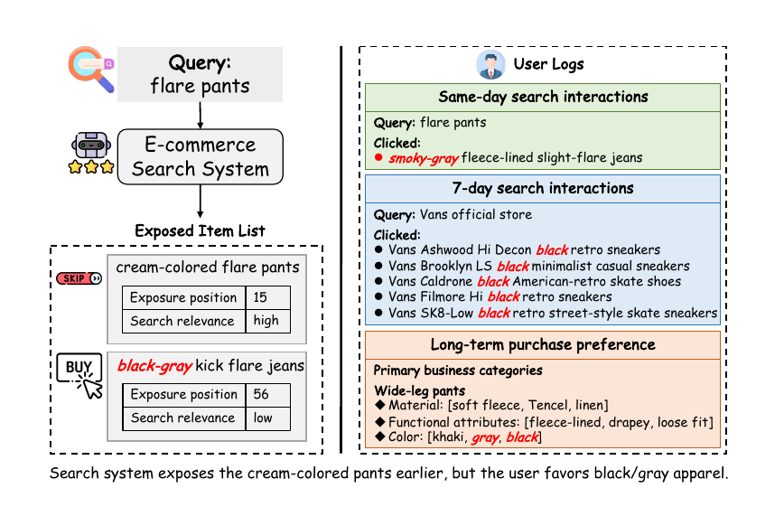
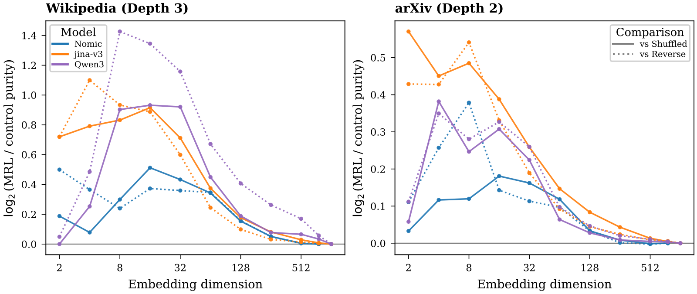
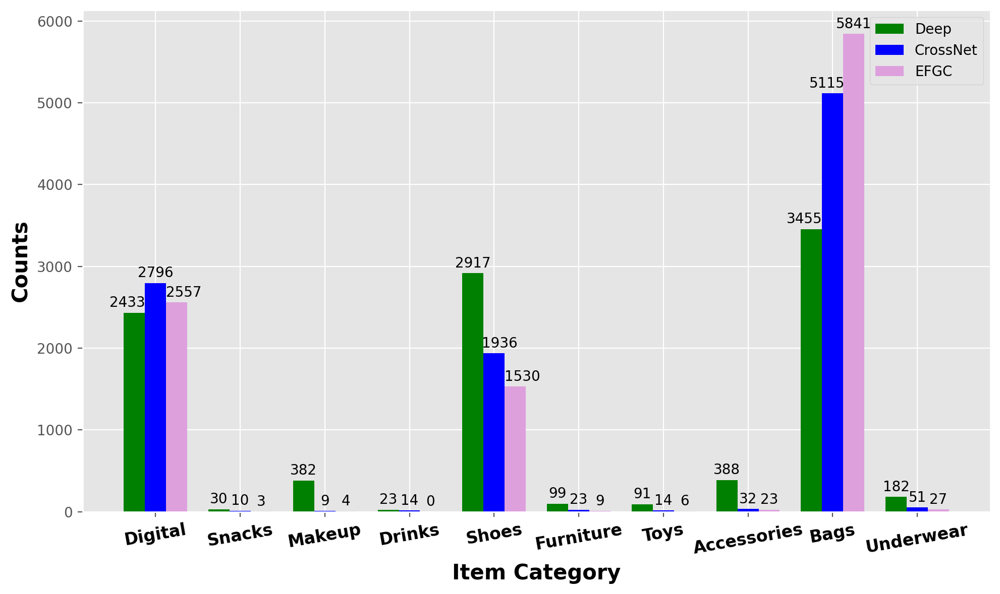

目录 · 5 节
1搜「digitalizar video 8mm」，译成了 scan，打标签却看不见原文：OneQuery 怎么一次做完四段流水线2流水线把上游错误锁死在标签里3四个字段一次生成，先用残缺标注把结构学起来4奖励不能直接抄评测指标5离线涨点和线上真正在跑的不是同一个模型搜「digitalizar video 8mm」，译成了 scan，打标签却看不见原文：OneQuery 怎么一次做完四段流水线
「digitalizar video 8mm」是一条西班牙语搜索，用户在找把 8mm 录像带数字化的服务或设备。传统查询理解流水线和 OneQuery 都把它译成了 scan 8mm video，其实更贴切的译法是 digitize 8mm video。但到了打标签这一步，流水线把关键词写成了 scan，OneQuery 写成了 digitize。翻译一样不够准，标签却没被带偏。
症结在流水线的接法上。多语种电商搜索通常把查询理解拆成四段独立模型：语言识别、拼写纠错、译成英语，再接 Query Tagging（QT，给 query 打结构化语义标签）。四个模块各自拿各自的数据和目标训练，线上按固定顺序串行。只要判成非英语，就先纠错、再翻译，最后把翻出来的英语交给 QT。下游压根看不见原始 query，只能接着上游交出来的句子往下做。语种判错，翻译跳过；翻译写偏，标签就只能硬吃那句偏了的英语。
阿里巴巴集团、厦门大学和哈尔滨工业大学（深圳）投给 WSDM 2027 的这篇 OneQuery，瞄准的是速卖通 AliExpress 的多语种搜索。它把这四件事收进同一个受预定义 schema 约束的 JSON，交给一个电商领域大模型一次生成。评测集取自速卖通在线日志，共 19,087 条多语种 query，全部由领域专家标齐。在 14B 骨干上，对比线上原有的独立模型流水线，语言识别准确率从 0.9514 升到 0.9665，翻译 ROUGE-2 从 78.20 升到 80.50，纠错 F1 从 0.8568 升到 0.8717，QT F1 从 0.8128 升到 0.8366。四个字段一起写，没靠压低哪一项去换另一项的涨点。这套流程放到 4B、8B 上也大体成立。
线上并没有把 14B 直接挂进实时链路。热 query 用 14B 离线算好写进缓存，长尾交给从 14B 输出蒸馏出来的 0.3B 学生模型。多国 A/B 中，列表到支付转化率（L2P）涨了 0.5%，并排人工相关性评估（SBS）涨了 0.8 pt。
这篇论文想证明的，不是再单独做一个更强的翻译模块，而是靠联合生成，让 QT 在翻译不完美时仍能从原始 query 里把意图找回来。这组数字是在电商领域持续预训练的 ME-LLM5.2 上跑出来的，线上跑的也不是 14B 本身。
流水线把上游错误锁死在标签里
图 1 把这条链路画得很直白。上面四个模型各自拿自己的数据做 SFT，虚线以下才是在线调用：Language → Spell → Translation → QT。图里拿德语 query「karrosseriescheiben」举了个例子：语种判成 De，纠错后原样保留，译成 body washers，最后打出 Crowd:body、Product:washers。重点不在这一条对不对，而在箭头的方向——每一格都只把左边的输出往下递。

来源：论文 Figure 1。上面是各自训练，下面是按固定顺序串行；下游模块吃的是上游输出，不是原始 query。
第二个评测案例把这种锁死体现得更彻底。「escape yamaha mt 07」里，escape 是常见英文词。流水线据此判成英语，跳过翻译，原句送进 QT，escape 被打成 MODEL（型号）。OneQuery 的第三阶段模型则判成西班牙语：yamaha 和 mt 07 指向摩托车配件，这里的 escape 是排气管，不是英文动词，于是译成 yamaha mt 07 exhaust，标签变成 BRAND（品牌） yamaha、MODEL mt 07、PRODUCT（产品） exhaust。语种这一个字段判错，后面的翻译和标签会跟着一起带偏。
四个字段一次生成，先用残缺标注把结构学起来
作者选择通过一次生成同时写出四个字段，从而让标签这支也能看见原始 query。给模型输入原始 query x，一次吐出一个 JSON：语言标签 lang、纠错后的 query spell、英语翻译 trans，还有结构化语义标签 qt。
四字段全齐的标注太贵，手头现成的数据大多只标了其中一项。作者把后训练拆成三步，见图 2。第一阶段把四个任务的样本混在一起做 SFT，每条只监督对应那一个字段，prompt 里用 Active Subtask 点明当前要做什么。这一步只管把四个单任务的能力揉进同一个模型，还不急着让它一次写出完整 JSON。 Hoot 说

第一阶段（示意）
- 这条样本里已有的标签
- 只有纠错后的 query
- 监督范围
- 只盯这一个字段，prompt 用 Active Subtask 点明当前任务
- 缺的三个字段
- 不进入损失，也不要求一次写出完整 JSON
目的：先把四个单任务能力揉进同一个模型。
第二阶段（示意）
- 已有的人工标签
- 纠错字段照留，不拿模型结果覆盖
- 缺的字段从哪来
- 用第一阶段模型补齐语言、翻译和 QT
- 怎样才收进训练集
- 能解析成合法 JSON，且 QT 实体和翻译说法对得上
过关后，才用统一 prompt 练一次写出四个字段。
假设一条样本只标了纠错，语言、翻译和 QT 都空着（示意，正文没有这条样本）。左边是第一阶段：只监督已有字段。右边是第二阶段：人工标签照留，缺项由第一阶段模型补齐，还要能解析成合法 JSON，并且 QT 里的实体和翻译对得上，才拿去练一次写出四个字段。
出处
正文本节：第一阶段单字段 SFT；第二阶段 Iterative Field Completion（人工标签保留、Stage 1 补缺、JSON 与跨任务一致性检查）后再联合 SFT。示意样本不是论文里的实例。到第二阶段，才开始练一次写出四个字段。具体做法叫 Iterative Field Completion：样本里本来有的人工标签照留，缺的字段拿第一阶段模型补齐，筛掉解析不出合法 JSON 的，再过一遍跨任务一致性检查，比如 QT 抽出来的实体得和翻译里的说法对得上。洗完攒出 360 万条伪数据，跟 31 万条人工标注混在一起，用上措辞尽量贴近第一阶段的统一 prompt，接着第一阶段的权重做联合 SFT。

来源：论文 Figure 2。左栏做单任务打底，中栏用 Stage 1 模型补全残缺标注后做联合 SFT，右栏用四项规则奖励做 GRPO。
伪数据加进来，并不是四项一起涨。只拿 31 万条人工标注做联合 SFT 时，语言识别准确率有 0.9644，QT F1 有 0.8183；掺进 360 万条伪数据后，翻译 ROUGE-2 从 73.61 涨到 78.53，纠错 F1 从 0.8585 涨到 0.8679，因为大规模多语种补全拉宽了翻译和拼写错误的覆盖面。但语言识别掉到 0.9547，QT F1 也略降到 0.8159。翻译和纠错吃到了数据多样性，语言识别和打标签却捎带吃进了一些噪声。
奖励不能直接抄评测指标
联合 SFT 已经能让模型一次吐出完整 JSON，但训练目标终究还是整段输出的 token 级似然，而且混了伪数据后语言识别还掉了一截。作者担心模型学出捷径，比如一看见高频英文词就往英语上判。第三阶段于是切到 GRPO 做对齐：同一条 query 采 G=8 组输出，靠组内奖励的均值和标准差算相对优势，省掉了单独的 value 网络；奖励也全走规则计算，不另训 reward model。用来算奖励的样本，是从那 31 万条人工标注里随机抽出的 3.1 万条，对照的是人工标签，不是第二阶段补出来的伪标签。
总分是四项加权：
R_total = w1 · R_lang + w2 · R_spell + w3 · R_trans + w4 · R_qt
语言识别就是归一化后的精确匹配。拼写纠错不一样：能接受的改法往往不止一种，死卡精确匹配会把「差一点」的输出全判零分。所以这里先看 query 需不需要改：需要纠错的，完全写对给 1，没全对就给 λ · Edit 的部分分，λ=0.3；本来就不该改的，原样输出才得 1，改动了就是 0。翻译和 QT 则咬死精确匹配。query 翻译本身很短又紧贴字段，按词重叠算软分，可能把语义已经跑偏的句子奖高；QT 把预测和标注都解析成 (实体类型, 文本) 的集合，必须完全对上才给 1。
直接拿各任务自己的评测指标当奖励，效果反而是四套设计里最弱的：语言和纠错用精确匹配，翻译取 ROUGE-1、ROUGE-2、ROUGE-L 的均值，QT 用 F1。作者给出的解释是，GRPO 要在组内做归一化，连续分数一旦挤在很窄的区间里，组内差异容易被采样噪声主导，优势估计的信噪比跟着往下掉。全部换成 0/1 精确匹配、再给拼写补上编辑距离后，翻译和 QT 往回拉了，可拼写 F1 却跌到 0.8566，低于第二阶段的 0.8679。不同任务的奖励尺度搅在同一个联合优化里，可能互相压制。
最终定下来的权重是 (0.35, 0.25, 0.25, 0.15)。字段是自回归按顺序写出来的，越靠前牵扯的后续字段越多，作者因此给了语言识别最高权重、QT 最低权重，同时也把混入伪数据后落下的语言识别拉回来。结果这一套在四项指标上都是四组里最好的：语言准确率 0.9665，翻译 ROUGE-2 80.50，纠错 F1 0.8717，QT F1 0.8366。KL 系数上，β=0.01 也比约束更紧的 0.1 效果更好，其中 QT F1 高出 1.12 个点；KL 压得太死，策略容易被钉在 SFT 参考模型附近。
离线涨点和线上真正在跑的不是同一个模型
14B 上各阶段的核心结果列在下面。基线是前面那条生产流水线；Qwen3.8-Max 和 GPT-5.6 Luna 用同一套 OneQuery 指令跑 few-shot，没有微调。
| 方法 | 语言 Acc | 翻译 ROUGE-2 | 纠错 F1 | QT F1 |
|---|---|---|---|---|
| 流水线 | 0.9514 | 78.20 | 0.8568 | 0.8128 |
| Stage 1 | 0.9505 | 78.24 | 0.8578 | 0.8144 |
| Stage 2 | 0.9547 | 78.53 | 0.8679 | 0.8159 |
| Stage 3 | 0.9665 | 80.50 | 0.8717 | 0.8366 |
| Qwen3.8-Max few-shot | 0.9469 | 71.54 | 0.8345 | 0.6403 |
| GPT-5.6 Luna few-shot | 0.9505 | 66.16 | 0.8327 | 0.6268 |
来源：论文 Table 1，14B 骨干及同指令 few-shot 对照。
第一阶段和流水线几乎打平，四个任务塞进同一个模型，并没有把单任务成绩拖垮。真正把差距拉开的，是第二阶段的数据和第三阶段的对齐，QT 涨得最明显：F1 从 0.8128 升到 0.8366，Precision 从 0.8164 升到 0.8406，Recall 从 0.8093 升到 0.8326，两边一起涨。这也跟开头「digitalizar」那个例子对得上——QT 原本挂在流水线最末尾，上游所有错都得由它兜底；换成四个字段对着原始 query 一起写，翻译写偏不一定再把标签拖下水。
同样的数据和超参放到 8B、4B 上走完三阶段，走势大体一致。跨规模比较时，Table 1 在每个骨干下都给出该规模自己的独立单任务 Pipeline 行。相对各规模那一行 Pipeline，语言识别分别提升 1.51、1.49、1.57 个点（14B / 8B / 4B），QT F1 分别提升 2.38、2.72、2.22 个点，翻译 ROUGE-2 分别提升 2.30、3.19、2.70，因为这套流程没有绑死在某一个模型规模上。纠错是个例外：8B 的 Stage 3 F1 为 0.8513，没有超过 8B 那一行 Pipeline 的 0.8529；4B 的 Stage 3 是 0.8428，超过了 4B Pipeline 的 0.8365，但又低于该规模第二阶段的 0.8475。纠错这一项更吃模型容量。
把通用大模型拉进来一比，领域后训练有多关键就很直观了。两个未微调模型做语言识别还过得去，可 QT F1 只有 0.6403 和 0.6268，比 14B 的 Stage 3 低大约 20 个点；翻译 ROUGE-2 也只有 71.54 和 66.16。纠错则是 Recall 最高、Precision 明显偏低，本来就对的 query 也容易被改写。缺字段时要是找更强的通用模型来补标，QT 尤其靠不住，它们并不认识平台自己那套标签词表。用第一阶段模型做自蒸馏，先保住的是补标质量，并不只是为了省标注费。
落到线上，14B 没挂在实时链路里。14B 先对大规模 query 日志做离线推理，头部结果写进缓存直接服务；剩下的长尾交给从 14B 输出蒸馏出来的 0.3B 学生模型做实时推理，在更紧的时延约束下也能用上这套查询理解。多国 A/B 相对原有查询理解系统，L2P 提高 0.5%，SBS 相关性提高 0.8 pt，实验期间保持稳定。离线表里的 14B，和线上真正在服务用户的模型，不是同一个。
读完这篇，你觉得
夜读鸮记下了，谢谢你的反馈。
点一下即可，无需登录；再点一次撤回。只统计匿名次数，不记录你是谁。
相关论文RELATED
 Retrieval · 2026-10-29Tessera: Structure-Completed Evidence Units for Web Retrieval-Augmented Generation问维基百科《欢乐糖果屋》的制片人是谁，答案就在页面信息框的制片一行，可文本抽取把这一格里的两个名字弄丢了，读者模型只看到导演，于是答错。这篇论文在整个英文维基百科上把答案证据从网页源码一路追到读者输入，发现这种丢失很普遍：7.6% 的问题证据根本没完整进索引，其中 81% 是表格单元格、表头或图注。Tessera 检索照旧，只在读之前把排名靠前的网页重新拆成一行表格、一个列表项这样的小单元，补上标题、章节和表头，再挑相关的装进同样的 token 预算。文本和截图两类流水线的答对率都提高 5 到 6 个点。
Retrieval · 2026-10-29Tessera: Structure-Completed Evidence Units for Web Retrieval-Augmented Generation问维基百科《欢乐糖果屋》的制片人是谁，答案就在页面信息框的制片一行，可文本抽取把这一格里的两个名字弄丢了，读者模型只看到导演，于是答错。这篇论文在整个英文维基百科上把答案证据从网页源码一路追到读者输入，发现这种丢失很普遍：7.6% 的问题证据根本没完整进索引，其中 81% 是表格单元格、表头或图注。Tessera 检索照旧，只在读之前把排名靠前的网页重新拆成一行表格、一个列表项这样的小单元，补上标题、章节和表头，再挑相关的装进同样的 token 预算。文本和截图两类流水线的答对率都提高 5 到 6 个点。
Generative · 2026-11-02UGR: Unified Generative Ranking for Heterogeneous E-commerce Recommendation淘宝的生成式排序框架 UGR 让一个生成模型直接排出用户最后看到的那一屏：一次请求里约一千个自然内容、广告和其他业务的候选一起交给它，逐个生成最终列表，不再由各业务先各自排好、再交给混排拼接。拼接这一步正是原来的毛病：生成模型排好的列表被混排插进别的内容，位置和上下文都变了，模型学到的前后顺序就不成立了。在猜你喜欢的线上 A/B 中，成交量提升 3.29%；同一个模型只排自然内容、再交给原来的混排，成交量只涨 2.84%，差出来的部分就是统一生成本身的收益。
Retrieval · 2026-11-13Beyond Query-Item Matching: Personalized Behavioral Relevance Modeling for E-commerce Search via Rubric-Guided Reinforcement Learning电商搜索通常先由相关性模型按 query 和商品的文字匹配把候选分成几档，再交给 CTR 模型排序，于是用户明明偏爱的商品，可能因为被分到低档而很少露出。阿里 1688 的这篇工作把一部分个性化挪到相关性这一步：让大模型读用户当天、近期和长期的搜索与购买记录，判断这件商品有没有行为证据支持，有就在相关性分档里提一级。训练时除了奖励判断对错，还按每条样本单独生成的评分细则，检查推理有没有真的用上这些行为证据。在 5% 的主搜流量上做了三天 A/B，有交易的用户天数提升 0.67%。个性化不一定只能放在排序层，改相关性分档也能起作用。线上只读离线算好的缓存结果，几乎不增加延迟。
Retrieval · 2026-11-03Peeling the Matryoshka: Extracting Ontological Structure from Retrieval Embeddings现成的检索 embedding 里带着能读出来的分类树信息。作者发现，用 Matryoshka 训练（MRL）的 embedding 把分类信息主要放在靠前的维度：按原顺序截取前一小段，比打乱后截取或截取末尾更能把同类概念聚到一起。PEEL 据此在冻结的 embedding 上只训一个 9.8 万参数的小投影，学会从两个概念的向量判断谁是上位，再拼成分类图。把拼出的图和标准分类图的节点一一配对，按节点名字和邻居的相似程度打分（Graph F1，满分 1），它在 Wikipedia 和 arXiv 上得到 0.885 和 0.931，前提是给定完整概念词表和一份标准上下位边。 Generative · 2026-11-17RecMem: Recurrent Memory Compression for Long-Sequence Generative Recommendation生成式推荐一旦把用户很长的历史直接送进模型，计算量和显存就会跟着历史长度一起涨，很长的交互序列很快变得又慢又贵。作者把历史一段一段压进数量固定的记忆槽，解码时只用固定长度的上下文，不再随历史变长而膨胀。在来自电商平台的长序列基准上，解码上下文从 1200 个 token 减到 216 个，仍保住了直接处理同样长历史的对照模型 87.9% 的 Recall@10，更靠后的召回也几乎相当。同一个训练好的模型在很长的后续交互里，推荐质量没有塌掉。远期行为里的信号，不必整段塞进解码器也能留下来。对要上线长序列生成式推荐的人来说，这给出了一条用固定容量记忆换上下文的路，而不是把整段历史都留在注意力窗口里。
Generative · 2026-11-17RecMem: Recurrent Memory Compression for Long-Sequence Generative Recommendation生成式推荐一旦把用户很长的历史直接送进模型，计算量和显存就会跟着历史长度一起涨，很长的交互序列很快变得又慢又贵。作者把历史一段一段压进数量固定的记忆槽，解码时只用固定长度的上下文，不再随历史变长而膨胀。在来自电商平台的长序列基准上，解码上下文从 1200 个 token 减到 216 个，仍保住了直接处理同样长历史的对照模型 87.9% 的 Recall@10，更靠后的召回也几乎相当。同一个训练好的模型在很长的后续交互里，推荐质量没有塌掉。远期行为里的信号，不必整段塞进解码器也能留下来。对要上线长序列生成式推荐的人来说，这给出了一条用固定容量记忆换上下文的路，而不是把整段历史都留在注意力窗口里。 Generative · 2026-11-09RecGroupMemory: Feedback-Aware Cohort Memory for E-Commerce Recommendation用大模型规划推荐流程时，如果希望它参考某类人群过去表现的记忆，就有一个难题：第二天有了新的成交反馈，建议要改，但人群定义、观察窗口和统计数字这些记录不能被模型顺手改掉。RecGroupMemory 把记忆拆成两层，一层是只读的观测记录，一层是画像和建议，前一天的反馈只允许改后一层，改完还要校验观测记录没变，不通过就保留原记录。在电商平台购买力较低、由业务方选定的用户上做线上对比，只加人群记忆的一组，成交用户数比无记忆基线多 1.58%；再加反馈修订的另一组，比它自己的无记忆基线多 1.78%。
Generative · 2026-11-09RecGroupMemory: Feedback-Aware Cohort Memory for E-Commerce Recommendation用大模型规划推荐流程时，如果希望它参考某类人群过去表现的记忆，就有一个难题：第二天有了新的成交反馈，建议要改，但人群定义、观察窗口和统计数字这些记录不能被模型顺手改掉。RecGroupMemory 把记忆拆成两层，一层是只读的观测记录，一层是画像和建议，前一天的反馈只允许改后一层，改完还要校验观测记录没变，不通过就保留原记录。在电商平台购买力较低、由业务方选定的用户上做线上对比，只加人群记忆的一组，成交用户数比无记忆基线多 1.58%；再加反馈修订的另一组，比它自己的无记忆基线多 1.78%。 Generative · 2026-11-02PFA: Attention Can Be Progressively Focused in Long-Sequence Generative Recommendation阿里的作者发现，生成式推荐做 beam 解码时，越往后注意力越集中在少数几条历史行为上，而且哪些行为重要，前后几步基本不变。据此提出的 PFA 把挑选重要历史这件事，从每步、每条 beam 各挑一次，改成整个解码只挑一次。它在解码第一步照常看完整历史；到第二步，把各条 beam 对历史的注意力按生成概率加权汇总，排出一份共用的重要行为排名，后面每步保留的行为数按固定比例缩小。在电商广告平台的线上 A/B 中，用户历史从 128 条加长到 512 条，收入提升 3.76%。响应时间仍比直接读完整历史更短。
Generative · 2026-11-02PFA: Attention Can Be Progressively Focused in Long-Sequence Generative Recommendation阿里的作者发现，生成式推荐做 beam 解码时，越往后注意力越集中在少数几条历史行为上，而且哪些行为重要，前后几步基本不变。据此提出的 PFA 把挑选重要历史这件事，从每步、每条 beam 各挑一次，改成整个解码只挑一次。它在解码第一步照常看完整历史；到第二步，把各条 beam 对历史的注意力按生成概率加权汇总，排出一份共用的重要行为排名，后面每步保留的行为数按固定比例缩小。在电商广告平台的线上 A/B 中，用户历史从 128 条加长到 512 条，收入提升 3.76%。响应时间仍比直接读完整历史更短。
Personalization · 2026-10-30Multi-Branch Cooperation Networks for Enhanced Click-Through Rate Prediction in Large-Scale E-Commerce Search做排序的团队值得读，因为它指出了多分支模型一个常被忽略的浪费：各分支擅长的样本不同，训练时却从不互相学。淘宝拍立淘（拍照搜商品）团队让三个分支在训练中互相纠错：同一条样本上，一个分支判对了用户点不点、另一个判错了，就用判对那个的预测去带判错的那个。另加一项约束，要求一个分支的中间向量乘上一个正交矩阵后，接近另一个分支的向量。线上 A/B 中点击率从 10.37% 提到 10.46%，GMV 相对提升 1.62%。多分支的收益不只来自多放几个分支，还来自让它们在彼此出错的样本上互相纠正。
讨论
欢迎补充实验细节、复现经验或不同看法。需 GitHub 登录。
正在加载讨论…